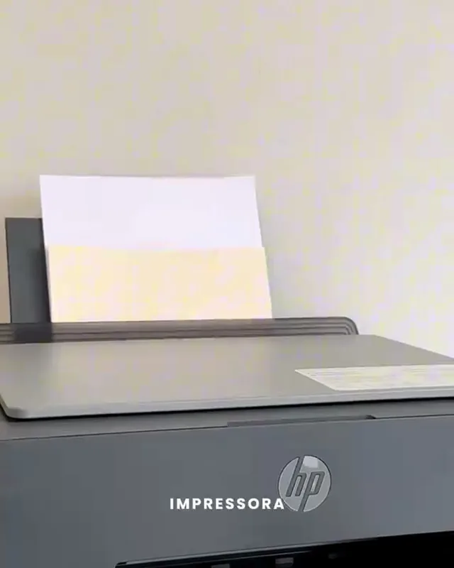
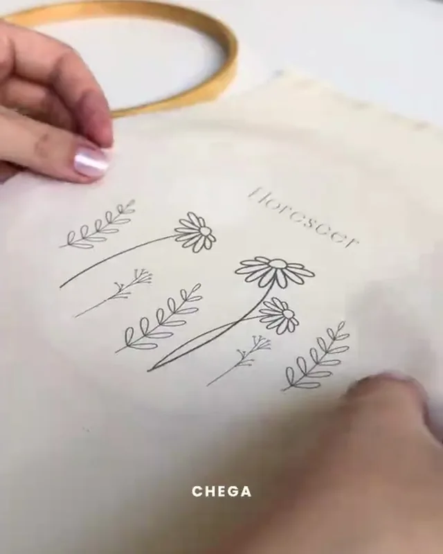

Para bordadeiras que querem produzir mais
+500 riscos organizados para você bordar, produzir e vender mais


Veja por dentro da Biblioteca
Veja alguns dos riscos, categorias e como você pode usar o material.


É simples de usar
Escolha seu risco

Imprima no tamanho que precisar

Passe para o tecido

Comece a bordar
Mais opções para suas próximas peças
Tenha mais opções para produzir suas encomendas sem precisar procurar novos modelos todos os dias.


Não sabe imprimir no tecido?
Você recebe videoaulas com o passo a passo completo.


E ainda tem mais
Você também recebe bônus para aproveitar melhor sua biblioteca.
Videoaulas

Catálogo Digital

Guia de Transferência

Alfabetos e Nomes

Frases para Bordar
Tudo isso faz parte da Biblioteca da Bordadeira.
Escolha Como Você Quer Começar
Mais completa e mais escolhida!
Biblioteca Completa
+500 Riscos Organizados
- +500 riscos organizados
- 10 categorias
- Prontos para imprimir
- Acesso imediato e vitalício
- Videoaulas bônus
- + todos os 5 bônus exclusivos
Compra segura • Acesso imediato • 7 dias de garantia
Quer começar com uma versão menor?
7 dias de garantia
Conheça o material com tranquilidade.
Perguntas Frequentes
É produto físico?
Não. É um produto digital, com acesso pela internet.
Como recebo?
Após a confirmação do pagamento, você recebe o acesso ao conteúdo.
Posso imprimir?
Sim. Os modelos são organizados para facilitar a impressão.
Como transfiro para o tecido?
Você recebe videoaulas ensinando o passo a passo.
O pagamento é único?
Sim. Você paga apenas uma vez, sem mensalidade.

Tenha seus riscos sempre à mão
+500 modelos organizados para suas próximas peças.
Quero Conhecer os Planos